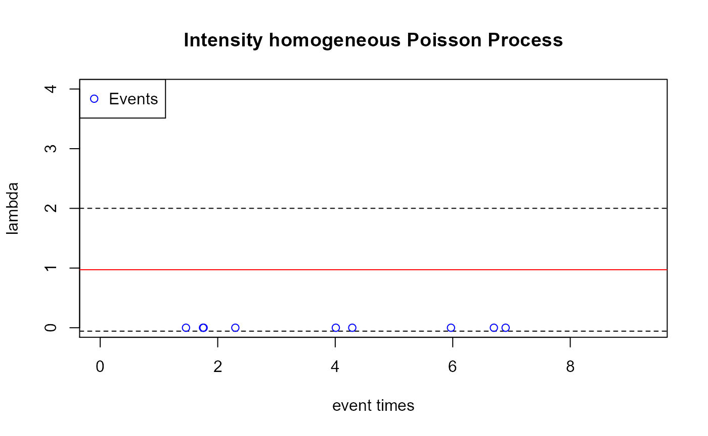
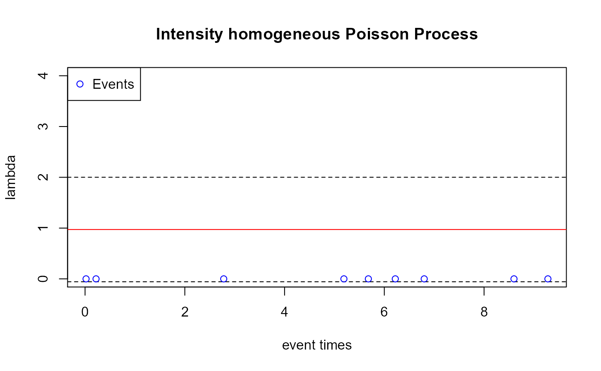
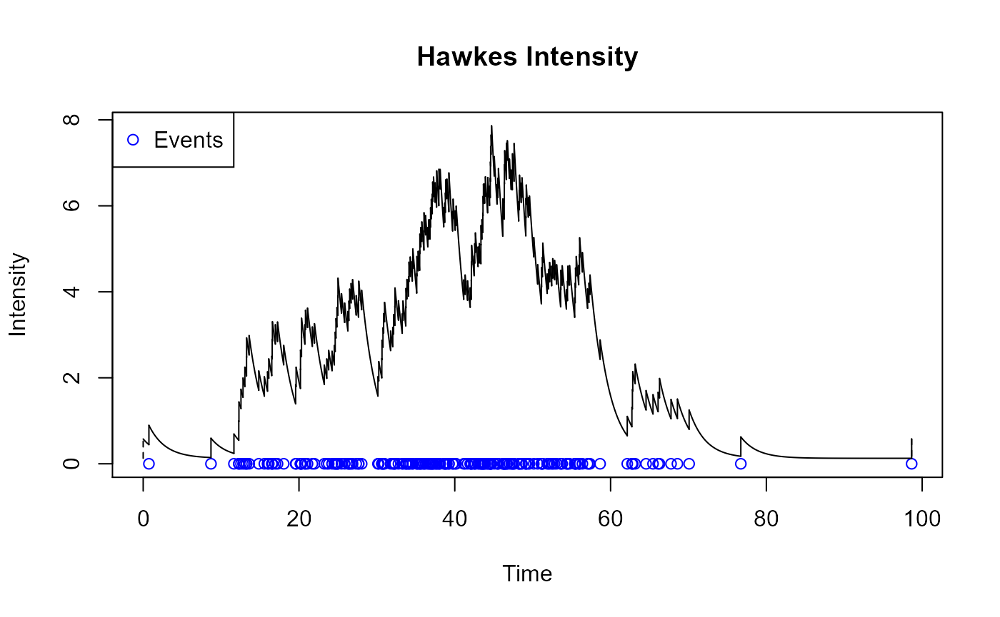
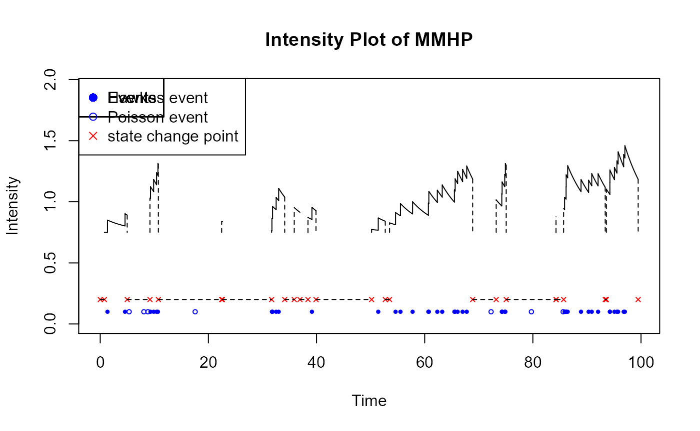
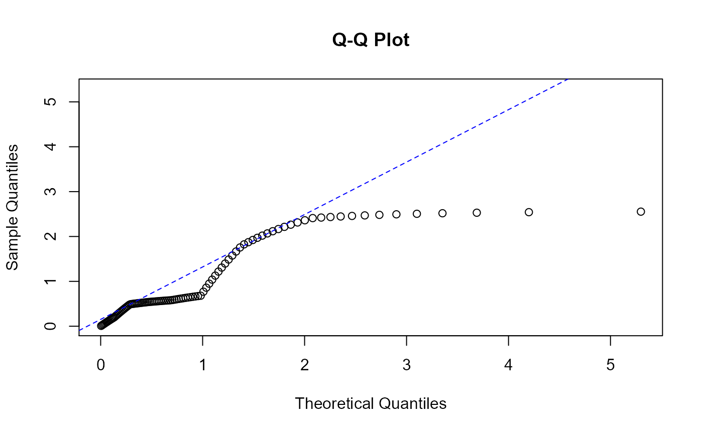
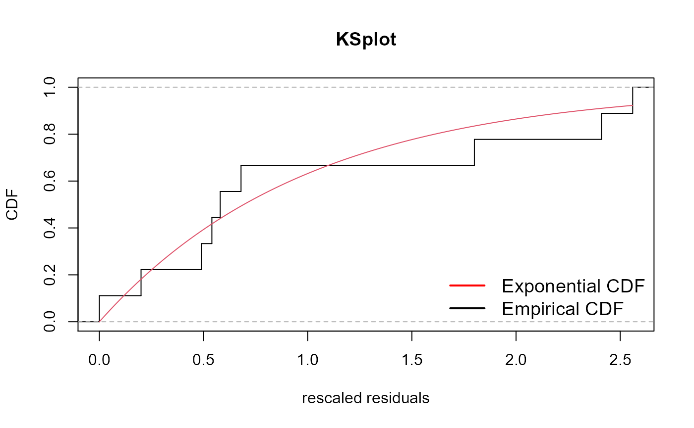
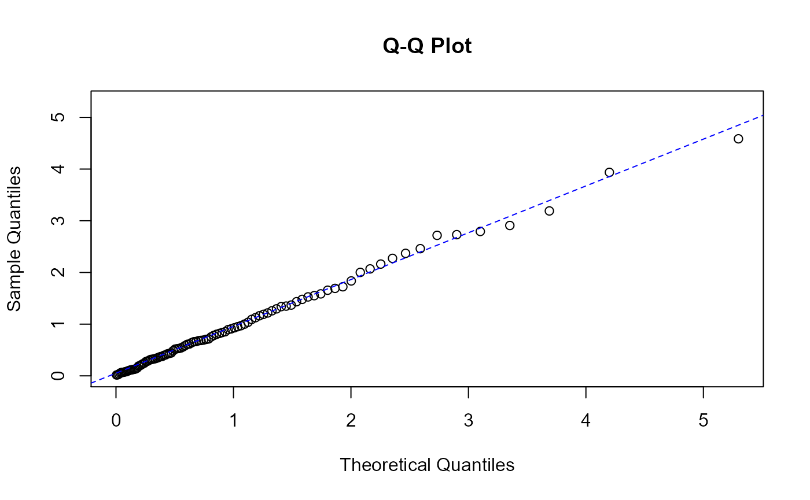
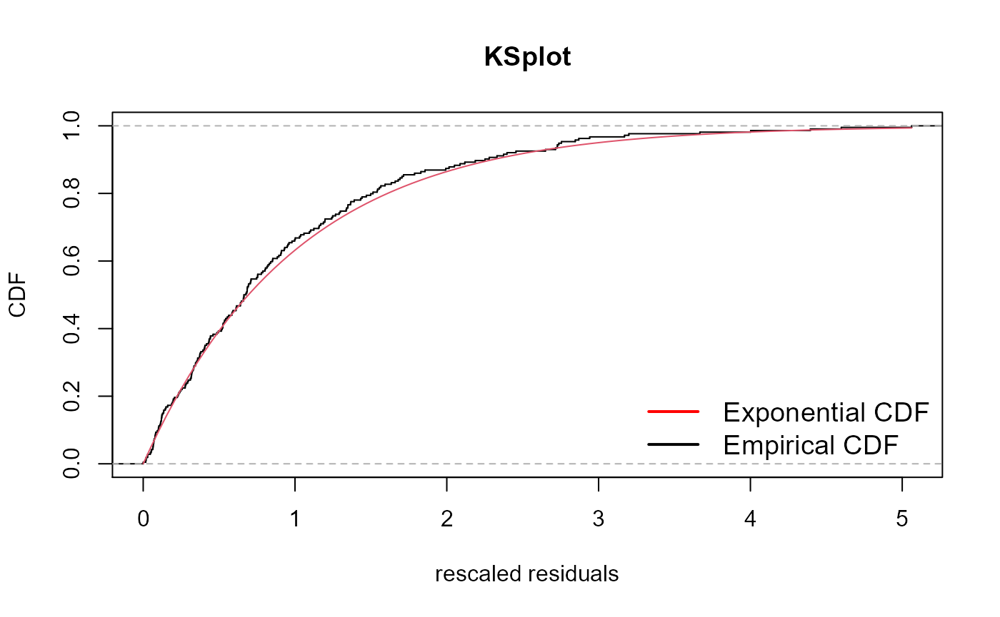
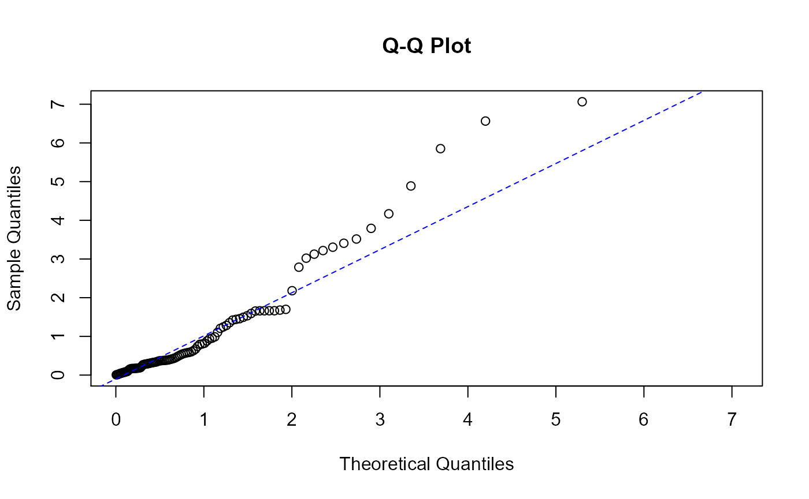
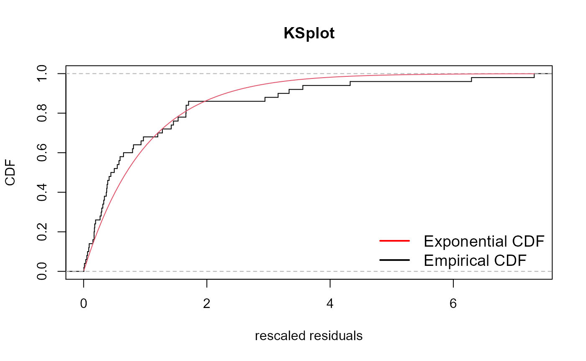

ppdiag, diagnostic tools for Point Processesmy-vignette.Rmdlibrary(ppdiag)
This vignette provides an introduction to the functions available in ppdiag to evaluate the fit of univariate temporal point processes.
To achieve this, we currently include a range of functions which allow a user to:
hpp(lambda, start=0, end=1, n = NULL) creates an object of a list type in class ‘hpp’.
hpp_obj <- hpp(lambda = 1, end = 10) hpp_obj #> $lambda #> [1] 1 #> #> $start #> [1] 0 #> #> $end #> [1] 10 #> #> $n #> NULL #> #> $events #> NULL #> #> attr(,"class") #> [1] "hpp"
hp(lambda0, alpha, beta, events = NULL) creates an object of list type in class ‘hp’.
hp_obj <- hp(lambda0 = 0.1,alpha = 0.45,beta = 0.5) hp_obj #> $lambda0 #> [1] 0.1 #> #> $alpha #> [1] 0.45 #> #> $beta #> [1] 0.5 #> #> $events #> NULL #> #> attr(,"class") #> [1] "hp"
mmhp(lambda0, lambda1, alpha, beta, Q = NULL, delta = NULL, events = NULL) creates an object of type in class ‘mmhp’.
Functions for simulating data include simulatehpp, simulatehp, and simulatemmhp, which take in objects of type hpp, hp, and mmhp, respectively, with additional parameters for simulation, and produces vector of simulated event times.
simulatehpp(hpp) takes a hpp object and returns a vector of event times. In the hpp object, one can either specify n, which is expected number of events, or end, which is the expected end time of event times. If both are provided, then the function will automatically simulate n events regardless of the end time specified.
Simulating by end time:
events <- simulatehpp(hpp_obj) events #> [1] 0.02 0.22 2.78 5.19 5.68 6.22 6.80 8.60 9.28
Simulating by n:
hpp_obj$n <- 50 simulatehpp(hpp_obj) #> 50 events simulated, end time ignored. To simulate up to an endtime don't specify n. #> [1] 1.13 2.59 3.05 3.94 5.99 7.30 7.90 8.77 9.00 9.61 12.36 12.58 #> [13] 14.31 14.36 14.41 14.98 15.06 18.54 19.43 19.76 20.47 21.51 21.67 21.98 #> [25] 26.54 28.39 31.68 32.30 32.85 34.74 35.27 36.12 39.33 40.51 41.46 44.87 #> [37] 44.95 45.47 46.44 47.62 51.36 51.82 52.32 53.48 54.15 54.34 55.66 55.74 #> [49] 56.63 60.05
simulatehp(hp, start=0, end, history=0) returns a list containing t and lambda.max.
sims <- simulatehp(hp_obj,start = 0, end = 100) sims #> $t #> [1] 0.735 8.701 11.649 12.271 12.291 12.553 12.816 13.052 13.265 13.277 #> [11] 13.598 14.839 15.554 15.961 16.123 16.509 16.561 16.591 16.966 17.246 #> [21] 18.038 19.570 19.629 20.185 20.194 20.323 20.329 20.759 20.836 21.096 #> [31] 21.713 21.987 23.249 23.570 23.813 24.248 24.533 24.648 24.747 24.875 #> [41] 24.985 25.006 25.458 25.861 26.275 26.408 26.508 26.686 26.881 27.345 #> [51] 27.642 27.679 28.047 30.136 30.245 30.633 30.657 30.783 30.867 30.988 #> [61] 31.764 32.039 32.148 32.310 32.328 32.768 33.253 33.349 33.710 33.729 #> [71] 33.860 34.065 34.121 34.279 34.546 34.618 35.115 35.139 35.293 35.494 #> [81] 35.520 35.643 35.772 36.038 36.051 36.249 36.539 36.649 36.824 36.891 #> [91] 36.985 37.104 37.162 37.274 37.470 37.664 37.683 37.954 37.972 38.119 #> [101] 38.584 38.713 38.791 38.841 38.986 39.246 39.246 39.724 39.784 40.052 #> [111] 40.180 41.150 41.327 41.638 41.976 42.121 42.134 42.168 42.489 42.561 #> [121] 42.646 42.984 43.148 43.354 43.360 43.485 43.601 43.624 43.681 43.832 #> [131] 43.929 44.216 44.243 44.464 44.554 44.577 44.605 44.658 44.725 45.069 #> [141] 45.428 45.530 45.604 46.162 46.175 46.344 46.360 46.373 46.412 46.618 #> [151] 46.635 46.751 47.016 47.241 47.389 47.410 47.608 47.615 48.209 48.276 #> [161] 48.309 48.522 48.632 49.119 49.131 49.179 49.441 49.588 50.143 50.641 #> [171] 51.114 51.145 51.248 51.302 51.861 52.036 52.178 52.444 52.576 52.810 #> [181] 53.078 53.593 53.620 53.793 54.327 54.468 54.520 54.736 55.392 55.455 #> [191] 55.504 55.592 55.909 56.004 56.030 56.384 57.047 57.223 57.362 58.657 #> [201] 62.143 62.740 62.805 62.848 63.155 64.557 65.448 66.102 66.286 67.761 #> [211] 68.581 70.084 76.722 98.653 #> #> $lambda.max #> [1] 7.122494
simulatemmhp(mmhp, n = 1, given_state = FALSE, states = NULL, seed = NULL, …) returns a list containing x, z, events, zt, lambda.max if given_state is FALSE; or a list containing events, zt, lambda.max if given_state is TRUE.
y <- simulatemmhp(mmhp_obj,n = 50) y #> $x #> [1] 0.000 0.771 4.985 9.193 10.747 22.456 22.594 31.700 34.113 35.874 #> [11] 36.931 38.415 39.895 50.184 52.708 53.506 68.872 73.217 75.072 84.282 #> [21] 84.301 85.691 93.380 93.589 99.473 #> #> $z #> [1] 2 1 2 1 2 1 2 1 2 1 2 1 2 1 2 1 2 1 2 1 2 1 2 1 2 #> #> $events #> [1] 0.000 1.337 4.588 5.346 8.065 8.823 9.300 9.876 10.416 10.669 #> [11] 17.554 31.748 31.867 32.530 32.996 39.145 51.410 54.612 55.517 57.760 #> [21] 60.678 60.766 62.334 63.241 65.494 65.634 66.089 67.010 67.775 72.277 #> [31] 74.259 74.314 74.800 74.917 79.730 85.604 85.868 86.144 86.164 86.440 #> [41] 88.908 90.312 90.890 92.064 94.242 94.249 95.082 95.545 95.768 96.795 #> [51] 97.018 #> #> $zt #> [1] 2 1 1 2 2 2 1 1 1 1 2 1 1 1 1 1 1 1 1 1 1 1 1 1 1 1 1 1 1 2 1 1 1 1 2 2 1 1 #> [39] 1 1 1 1 1 1 1 1 1 1 1 1 1 #> #> $lambda.max #> [1] 1.526639
Functions for fitting objects include fithpp and fithp, which take in event times and produce object of type hpp and hp, respectively.
fithpp(events) returns an object of class ‘hpp’.
fit_hpp <- fithpp(events) fit_hpp #> $lambda #> [1] 0.9719222 #> #> $start #> [1] 0.02 #> #> $end #> [1] 9.28 #> #> $n #> [1] 9 #> #> $events #> [1] 0.02 0.22 2.78 5.19 5.68 6.22 6.80 8.60 9.28 #> #> attr(,"class") #> [1] "hpp"
fithp(vec,t,end) returns an object of class ‘hp’.
init <- rep(0.1,3) fit_hp <- fithp(init,sims$t,max(sims$t)) fit_hp #> $lambda0 #> [1] 0.1277708 #> #> $alpha #> [1] 0.4494989 #> #> $beta #> [1] 0.4753996 #> #> $t #> [1] 0.735 8.701 11.649 12.271 12.291 12.553 12.816 13.052 13.265 13.277 #> [11] 13.598 14.839 15.554 15.961 16.123 16.509 16.561 16.591 16.966 17.246 #> [21] 18.038 19.570 19.629 20.185 20.194 20.323 20.329 20.759 20.836 21.096 #> [31] 21.713 21.987 23.249 23.570 23.813 24.248 24.533 24.648 24.747 24.875 #> [41] 24.985 25.006 25.458 25.861 26.275 26.408 26.508 26.686 26.881 27.345 #> [51] 27.642 27.679 28.047 30.136 30.245 30.633 30.657 30.783 30.867 30.988 #> [61] 31.764 32.039 32.148 32.310 32.328 32.768 33.253 33.349 33.710 33.729 #> [71] 33.860 34.065 34.121 34.279 34.546 34.618 35.115 35.139 35.293 35.494 #> [81] 35.520 35.643 35.772 36.038 36.051 36.249 36.539 36.649 36.824 36.891 #> [91] 36.985 37.104 37.162 37.274 37.470 37.664 37.683 37.954 37.972 38.119 #> [101] 38.584 38.713 38.791 38.841 38.986 39.246 39.246 39.724 39.784 40.052 #> [111] 40.180 41.150 41.327 41.638 41.976 42.121 42.134 42.168 42.489 42.561 #> [121] 42.646 42.984 43.148 43.354 43.360 43.485 43.601 43.624 43.681 43.832 #> [131] 43.929 44.216 44.243 44.464 44.554 44.577 44.605 44.658 44.725 45.069 #> [141] 45.428 45.530 45.604 46.162 46.175 46.344 46.360 46.373 46.412 46.618 #> [151] 46.635 46.751 47.016 47.241 47.389 47.410 47.608 47.615 48.209 48.276 #> [161] 48.309 48.522 48.632 49.119 49.131 49.179 49.441 49.588 50.143 50.641 #> [171] 51.114 51.145 51.248 51.302 51.861 52.036 52.178 52.444 52.576 52.810 #> [181] 53.078 53.593 53.620 53.793 54.327 54.468 54.520 54.736 55.392 55.455 #> [191] 55.504 55.592 55.909 56.004 56.030 56.384 57.047 57.223 57.362 58.657 #> [201] 62.143 62.740 62.805 62.848 63.155 64.557 65.448 66.102 66.286 67.761 #> [211] 68.581 70.084 76.722 98.653 #> #> attr(,"class") #> [1] "hp"
There are several existing methods which can be used to assess the goodness of fit of a point process to temporal data. In this package we allow a user to:
drawHPPIntensity(hpp, events = NULL, color = “red”, plot_events = FALSE, fit = FALSE, int_title = “Intensity homogeneous Poisson Process”) plots the intensity of a homogeneous poisson process.
To plot the simulated events with the intensity, specify plot_events=FALSE.
drawHPPIntensity(fit_hpp,events=events, color = "red") #> The inputted events not used, hpp object #> and simulated events will be plotted. #> 9 events simulated, end time ignored. To simulate up to an endtime don't specify n.

To plot the inputted events with the intensity, specify plot_events=TRUE.
drawHPPIntensity(fit_hpp, events=events, color = "red", plot_events=TRUE) #> Fitting specified hpp.

drawHPIntensity(hp_obj, start, end, history=0, events, color = 1, i = 1, add=FALSE, fit=FALSE, plot_events=FALSE, vec=NULL, int_title=“Hawkes Intensity”) plots the intensity of a hawkes process.
drawHPIntensity(fit_hp, start=0, end=max(sims$t), history=0, events = sims$t, plot_events = TRUE) #> Using specified hp object.

drawUniMMHPIntensity(mmhp, simulation, add = FALSE, color = 1, given_main = “Intensity Plot of MMHP”) plots the intensity of a mmhp process.
drawUniMMHPIntensity(mmhp_obj, y)

diagpp(object, events, pzt = NULL) gives diagnostics of the model, including a qq plot, a ks plot, ks test, raw and pearson residuals. For hpp:

#>
#> Raw residual: -1
#> Pearson residual: -0.28
#>
#> One-sample Kolmogorov-Smirnov test
#>
#> data: r
#> D = 0.17328, p-value = 0.9095
#> alternative hypothesis: two-sidedFor hp:

#> Raw residual: 12.43472
#> Pearson residual: 10.18691
#>
#> One-sample Kolmogorov-Smirnov test
#>
#> data: r
#> D = 0.038105, p-value = 0.9152
#> alternative hypothesis: two-sidedFor mmhp:
diagpp(mmhp_obj, events = y$events, pzt = 0.5)

#>
#> One-sample Kolmogorov-Smirnov test
#>
#> data: r
#> D = 0.14254, p-value = 0.238
#> alternative hypothesis: two-sided